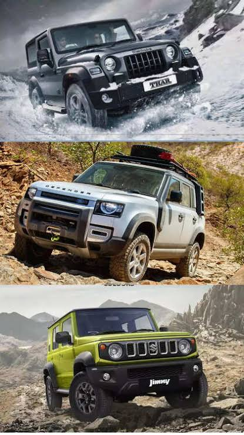
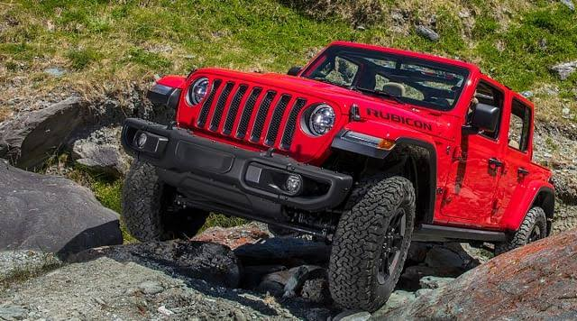

Offroad Adventure In Car
Off-road vehicles are designed to handle diverse and challenging terrains beyond paved roads, offering capabilities like high ground clearance, robust suspension, and specialized tires. Popular off-road vehicles in India include the Toyota Fortuner, Mahindra Thar, Force Gurkha, and Jeep Wrangler, each offering unique features and capabilities.
read more
Indian Adventure

